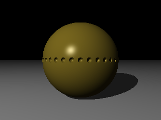
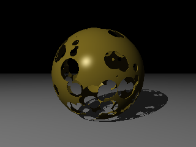
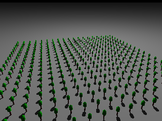
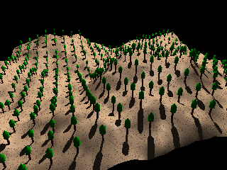
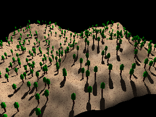

x = R.cos(&theta) z = R.sin(&theta) |
x = R.cos(&theta).cos(&phi) y = R.sin(&phi) z = R.sin(&theta).cos(&phi) |
| 1.En utilisant les coordonnées polaires, construisez l'objet qui apparaît dans la figure ci-contre. A titre d'indication, il est constitué d'une sphère à laquelle on a ôté de nombreuses petites sphères au niveau de son équateur. |  |
| 2.En utilisant cette fois les coordonnées sphériques, construisez un objet qui ressemble à celui de la figure Y. Il a été construit à partir d'une sphère creuse, trouée par de nombreuses sphères plus petites, placées aléatoirement sur sa surface et de rayon variable. |  |
Le calcul d'une position sur la surface d'un objet peut parfois être extrêmement compliqué, dès lors que l'objet en question n'est pas un objet simple. Pensez par exemple à ce que vous devriez faire pour calculer une position particulière sur un objet issu d'opérations CSG ou d'un Modèle Numérique de Terrain.
Povray fournit une fonction très intéressante pour ce genre de problème : la fonction trace, qui fonctionne sur le principe du lancer de rayons (Ca tombe bien puisque c'est justement ce que sait très bien faire povray !!!).
Pour les questions qui suivent, on vous fournit le script suivant, qui permet la modélisation (très simple) d'un arbre de type sapin.
// un modèle simple de sapin
// centré sur l'axe 0y - dans <-0.3, 0.0, -0.3> - <-0.3, 0.5, -0.3>
#declare sapin = union {
cylinder { <0,0,0>,<0,0.25,0>, 0.1 pigment {color Brown} }
cone { <0,0.25,0>,0.3,<0,0.35,0>, 0.0 pigment {color Green} }
cone { <0,0.30,0>,0.3,<0,0.40,0>, 0.0 pigment {color Green} }
cone { <0,0.35,0>,0.3,<0,0.45,0>, 0.0 pigment {color Green} }
cone { <0,0.40,0>,0.3,<0,0.50,0>, 0.0 pigment {color Green} }
}
Le but de ce script n'est pas d'être réaliste (loin s'en faut ...) mais rapide à calculer ...
| 1. Ecrire un script permettant de positionner des sapins sur un plan d'équation y=0, pour x et z prenant leurs valeurs dans [-450,450], SANS UTILISER la fonction trace. Les sapins devront avoir un écartement de 50 unités. Pensez à appliquer un scale sur les objets sapin pour qu'il soient visibles ... |  |
| 2. Modifiez à présent votre script de manière à utiliser trace. | |
| 3. On souhaite à présent remplacer le plan horizontal par un modèle numérique de terrain. Faites les modifications nécessaires sur votre script (notez que vous êtes ici obligés d'utiliser la fonction trace pour calculer la hauteur de chaque sapin). |  |
| 4. Modifiez le script de manière à ce que les sapins ne soient plus disposés de manière aussi régulière ... |  |